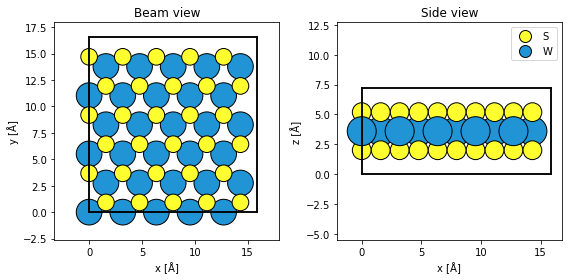
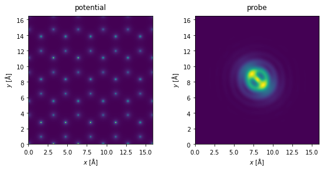
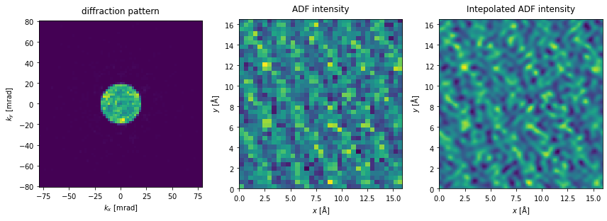
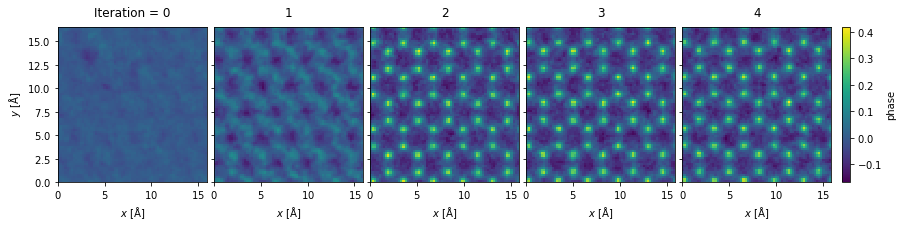
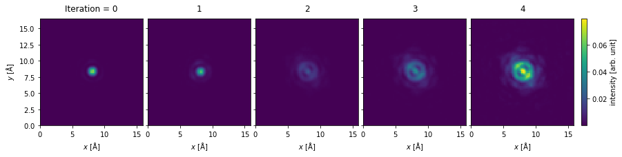

Ptychography with PIE#
Ptychography describes a family of reconstruction algorithms that attempts to find a phase object \(O(\vec{r})\) (representing the electrostatic potential) and a probe \(P(\vec{r})\) from a collection of overlapping diffraction patterns. Given some guess, the wave function describing the probe at a given position \(\vec{r}_p\) is, in the weak phase approximation, given as
thus the equivalent diffraction pattern is
Given a collection of measured diffraction patterns \(I_{measured}(\vec{r}_p, \vec{r})\), our goal is to minimize the sum of squared errors
The Ptychographic Iterative Engine (PIE) is an iterative technique that at each step transmits a guess of the probe to produce a guess of the resulting diffraction, ie. the guess for that exit wave, \(\psi_j(\vec{r}_p, \vec{r})\), by replacing its reciprocal-space amplitude with the square root of the measured diffraction pattern. This producedure is continued until convergence.
abTEM implements several flavors of PIE:
RegularizedPtychographicOperator: Used to reconstruct weak-phase objects.SimultaneousPtychographicOperator: Used to reconstruct the electrostatic phase and magnetic phase objects simultaneously.MixedStatePtychographicOperator: Used to reconstruct weak-phase objects with partial coherence.MultislicePtychographicOperator: Used to reconstruct thick weak-phase objects.
In this tutorial, we describe how to use regularized PIE[MJL17] with the RegularizedPtychographicOperator.
4D-STEM simulation of WS2#
As a test system we will simulate WS2.
atoms = ase.build.mx2("WS2", vacuum=2)
atoms = abtem.orthogonalize_cell(atoms) * (5, 3, 1)
fig, (ax1, ax2) = plt.subplots(1, 2, figsize=(8, 4))
abtem.show_atoms(atoms, ax=ax1, title="Beam view")
abtem.show_atoms(atoms, plane="xz", ax=ax2, title="Side view", legend=True)
fig.tight_layout()

We create the potential and a probe whose aberrations are deliberately exaggerated to demonstrate the capabilities of the ePIE algorithm.
potential = abtem.Potential(
atoms,
sampling=0.05,
)
aberrations = {"C10": -130, "C12": 20, "phi12": 0.785, "C30": -2e4}
probe = abtem.Probe(semiangle_cutoff=20, energy=100e3, **aberrations)
probe.grid.match(potential)
fig, (ax1, ax2) = plt.subplots(1, 2, figsize=(8, 4))
potential.show(ax=ax1, title="potential")
probe.show(ax=ax2, title="probe")
fig.tight_layout()
[########################################] | 100% Completed | 1.06 ss
[########################################] | 100% Completed | 310.51 ms

We run a 4D-STEM simulation over a periodic area of the sample (using fractional coordinates). In contrast to when we simulate STEM-ADF images, Nyquist sampling has no particular significance, as the sampling of the reconstruction is determined by the maximum scattering angle of the diffraction patterns. However, to make a comparison, we scan at the Nyquist sampling rate (the default).
scan = abtem.GridScan(
start=(0, 0), end=(1 / 5, 1 / 3), fractional=True, potential=potential,
)
pixelated_detector = abtem.PixelatedDetector()
diffraction_patterns = probe.scan(potential, scan=scan, detectors=pixelated_detector)
diffraction_patterns.compute()
[########################################] | 100% Completed | 7.67 sms
<abtem.measurements.DiffractionPatterns at 0x145667850>
We can crop the measurement to a match the maximum detected angle of a specific detector; here, to a maximum scattering angle of \(80 \ \mathrm{mrad}\). The PIE algorithm reconstructs the entire potential used for the simulation, even if the scan region only covers a fraction of the potential. Thus, we will tile the scan axes to match the potential, ensuring that we have probes covering the entire reconstructed region.
The reciprocal-space sampling of the diffraction pattern shown below is significantly lower than typical experimental sampling. To improve the reciprocal-space sampling rate, we would need to increase the number of repetitions of the atomic structure.
Clearly, with such a poor probe, any regular image is going to be poor as well.
tiled_measurements = diffraction_patterns.tile_scan((5, 3)).poisson_noise(1e5)
cropped_measurements = tiled_measurements.crop(max_angle=80)
fig, (ax1, ax2, ax3) = plt.subplots(1, 3, figsize=(12,5))
cropped_measurements.show(ax=ax1, title="diffraction pattern", units="mrad")
tiled_measurements.integrate_radial(50, 150).show(
ax=ax2, title="ADF intensity"
)
tiled_measurements.integrate_radial(50, 150).interpolate(.1).show(
ax=ax3, title="Intepolated ADF intensity"
)
plt.tight_layout()

To run PIE we create a RegularizedPtychographicOperator and initialize it with DiffractionPatterns. The necessary experimental parameters are:
energy: Primary beam energy in keV.semiangle_cutoff: Convergence semiangle of the initial probe guess in mrad.scan_step_sizes: The sampling rate of the probe in Ångstrom.angular_sampling: The reciprocal space sampling of the diffraction patterns in mrad.
We can also pass a Probe object to specify an initial probe guess with aberrations, but one of the strengths of r-PIE is reconstructing the aberrations, so we typically omit this.
Additionally, the following optional experimental parameters are available:
rotation_angle: The rotation angle between the real-space scan directions and the reciprocal space. Unless deliberately introduced this is zero in simulations.background_counts_cutoff: Any diffraction intensities (or electron counts) below this value are set to zero.counts_scaling_factor: The diffraction intensities are divided by this factor.object_px_padding: By default the reconstructed object in real space is padded to avoid the effect periodicity to influence the reconstruction. In the special case, such as our simulation, of a perfectly periodic scan region, this can be set to zero.
If you’re passing a DiffractionPatterns object, most of these will be automatically detected. Here we specify object_px_padding:(0,0) to indicate we’re interested in a periodic reconstruction.
ptycho_operator = RegularizedPtychographicOperator(
cropped_measurements,
parameters={"object_px_padding": (0, 0)},
)
ptycho_operator.preprocess()
<abtem.reconstruct.RegularizedPtychographicOperator at 0x144e6a810>
The reconstruction algorithm has a lot of hyper-parameters (such as update step sizes and regularization), the main ones being:
alpha: Controls the weights of the object update function; small values of \(alpha\) increase the weights of less illuminated object pixels. Lowering \(\alpha\) can help increase the convergence rate, but this may come at the cost of less stability. Default is 1.0.beta: The equivalent of \(\alpha\) for the probe update function.object_step_size: The (initial) step size for the object update function, given as \(\gamma_{\mathrm{obj}}\) in [MJL17]. Increasing this may improve convergence rate at the cost of stability. Default is 1.0.probe_step_size: The equivalent of \(\gamma_{\mathrm{obj}}\) for the probe update function.step_size_damping_rate: The damping rate of the step sizes. Default is 0.995.
The default hyperparameters values perform reasonably well, but we can conservatively set \(\alpha = 0.5\) to improve the speed of convergence.
We set max_iterations=5, thus each probe position is used 5 times. We set return_iterations=True to return the object and probe after each iteration. We set verbose=True to print the steps the algorithm will take, and the error at each iteration.
rpie_objects, rpie_probes, rpie_positions, rpie_sse = ptycho_operator.reconstruct(
max_iterations=5, return_iterations=True, random_seed=1, verbose=True
)
Ptychographic reconstruction will perform the following steps:
--Regularized PIE for 6825 steps
--Probe correction is enabled
----Iteration 0, SSE = 8.123e-04
----Iteration 1, SSE = 6.249e-06
----Iteration 2, SSE = 6.019e-06
----Iteration 3, SSE = 5.592e-06
----Iteration 4, SSE = 5.572e-06
Comparing the output from ptychography to ADF, we see two distinct advantages:
We see that the rPIE algorithm succesfully deconvolved the effect of the probe from the potential after just a few iterations.
Improved resolution: we scanned at the Nyquist sampling with probe with a convergence semiangle of \(20 \ \mathrm{mrad}\), but obtained reconstruction with a reciprocal space sampling matching the detector, which has a significantly higher maximum angle than the probe.
rpie_objects.phase().show(
explode=True, figsize=(14, 5), cbar=True, common_color_scale=True
);

rpie_probes.intensity().show(
explode=True, figsize=(14, 5), cbar=True, common_color_scale=True, #vmax=1.8e-6
);
